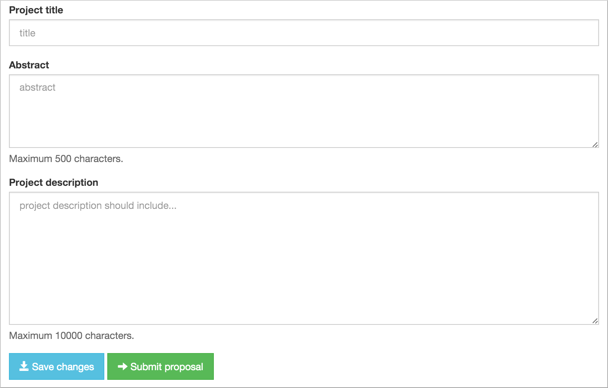
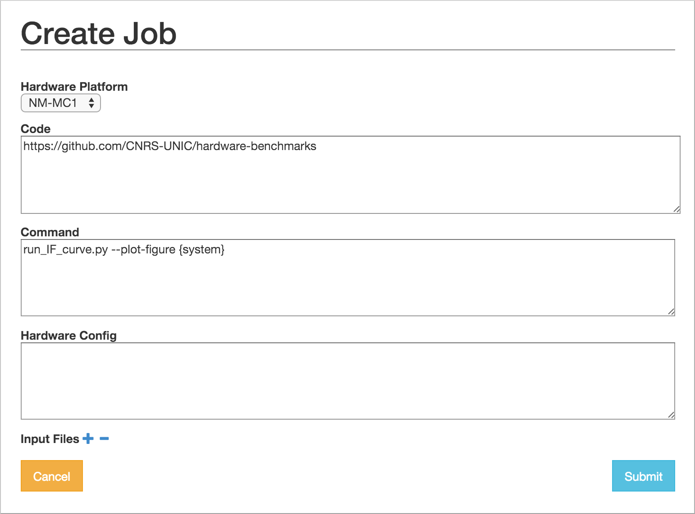
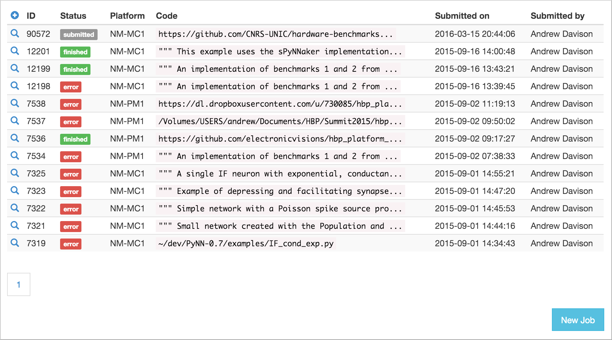

Running simulations¶
The Neuromorphic Computing Platform of the Human Brain Project contains two very different neuromorphic hardware systems - BrainScaleS (also known as “NM-PM-1”, “physical model”) and SpiNNaker (also known as “NM-MC-1”, “many core”) - but has a single interface.
Jobs are written as Python scripts using the PyNN API, submitted to a queue server, then executed on one of the neuromorphic systems. On job completion, the user may retrieve the results of the simulation/emulation.
There are several ways of interacting with the queue server. This document describes the web interface and the Python client.
Format of a job¶
Whether using the web interface or the Python client, a job for the HBP Neuromorphic Computing Platform consists of:
- an experiment description
- input data
- hardware platform configuration
Experiment description¶
The experiment description takes the form of a Python script using the PyNN API. You must provide one of:
- a single script, uploaded as part of the job submission or pasted into the web form
- the file path of a single script located on your local machine (Python client only)
- the URL of a public Git repository
- the URL of a zip or tar.gz archive
In the latter two cases, you may optionally specify the path to the main Python script you wish
to run, together with any command-line arguments. The command-line arguments may contain a
placeholder, “{system}”, which will be replaced with the name of the PyNN backend module
to be used (e.g. “spinnaker”). Example:
main.py --option1=42 {system}
If the path is not specified, the script is assumed to be named run.py,
i.e. the default is:
run.py {system}
Input data¶
Input data are specified as a list of data items. Each data item is the URL of a data file that should be downloaded and placed in the job working directory. If your input data files are contained within your Git repository or zip archive, you do not need to specify them here.
Hardware platform configuration¶
Here you must choose the hardware system to be used (“BrainScaleS” for the Heidelberg system, “SpiNNaker” for the Manchester system, “BrainScaleS-ESS” for the software simulator of the BrainScaleS system, or “Spikey” for the Heidelberg single-chip system) and specify any specific configuration options for the hardware system you have chosen.
Using the web interface¶
Setting up your Collab¶
The neuromorphic computing platform can be accessed from within the HBP Collaboratory using the “Neuromorphic Computing Platform Job Manager v2” app and the “Neuromorphic Computing Platform Resource Manager” app.
To create a new Collab which already contains these two apps, go to the Neuromorphic Computing Platform collab and click on Create a Collab or Get Started! To add the apps to an existing Collab, click ADD in the Navigation panel, and then select each of the apps in the list.
Requesting access to the platform¶
In your Collab, click on Resource Manager, and fill in the form.
{kind=link}
The project description should contain a scientific or technical motivation for using the platform, and should specify which of the Neuromorphic Computing Systems (“BrainScaleS” and/or “SpiNNaker”) you wish to use.
Three forms of access are available:
- Test access
- Only a brief abstract is required explaining why you wish to use the platform. It is not necessary to fill in the “Project description” field. No previous experience with the platform is required. A fixed quota of 5000 core-hours (for the SpiNNaker system) and/or 0.1 wafer-hours (for the BrainScaleS system) will be allocated, together with temporary storage of 1 GB.
- Preparatory access
- Only a short technical motivation is required. Previous experience with the platform (through a test access) is expected. A fixed quota of 500000 core-hours (for the SpiNNaker system) and/or 10 wafer-hours (for the BrainScaleS system) will be allocated, subject to a brief technical review, together with temporary storage of 10 GB.
- Project access
- For projects requiring more than the test/preparatory quotas, a scientific motivation of about one page should be provided, and a request for resources (in core-hours, wafer-hours and/or GB of storage) should be specified, and justified with respect to the project’s scientific goals. This proposal will receive both scientific and technical reviews.
Do not forget to specify which type of access you are requesting, and which of the Neuromorphic Computing Systems (“BrainScaleS”, “Spikey” and/or “SpiNNaker”) you wish to use.
Access is granted on a per-collab basis, not per-person. All members of this collab will be able to make use of the quota. All collab members will also be asked to sign and return a User Agreement form.
Once the resource request is granted, the Resource Manager will display the quota usage.
Submitting a simulation job¶
To submit a simulation job to the Platform, click on Job Manager.
You will see a list of jobs you have submitted to the platform. The first time you connect, of course, this list will be empty.
To create a new simulation job click on the ‘+’ icon or the New Job button.
In this dialog, you must choose the project with which the job is associated, the hardware platform on which you wish to run (“BrainScaleS”, “SpiNNaker”, “BrainScaleS-ESS” or “Spikey”), and provide the Python script which should be run, either by copy-and-pasting the script into the “Code” box,

or by giving the URL of a version control repository or zip/tar archive together with a command-line invocation.
{kind=link}
In your Python script you should avoid hard-coding the name of the PyNN backend to run, as this will differ depending on the platform. Instead, your script should read the name of the backend from the command-line. With PyNN 0.8, this can be achieved using:
from pyNN.utility import get_simulator
sim, options = get_simulator()
sim.setup(...)
p = sim.Population(...)
For PyNN 0.7, see Using different backends.
The “Hardware config” box is optional, but may contain extra configuration options in JSON format (similar to the syntax for dictionaries in Python).
Note
more information on the available configuration options for the different hardware systems will be provided soon.
It is possible to provide input data files to the simulation. The files must be accessible online.
After clicking “Submit” the job will be submitted to the queue, and will appear in the list of jobs with a “submitted” label.
{kind=link}
You will receive e-mail notifications when the job starts running and when it completes.
{kind=link}
Using the Python client¶
The Python client allows scripted access to the Platform. The same client software is used both by end users for submitting jobs to the queue, and by the hardware systems to take jobs off the queue and to post the results.
Installing the Python client¶
Install the nmpi_client package from PyPI into a virtual environment, using for example virtualenv or Anaconda. The client works with Python 2.7 and Python 3.3 or newer.
$ pip install hbp_neuromorphic_platform
Configuring the client¶
Before using the Neuromorphic Computing Platform you must have an HBP account, have created at least one Collab, and have obtained a compute quota as described above under Requesting access to the platform.
To interact with the Platform, you first create a Client object with your HBP username:
import nmpi
c = nmpi.Client("myusername")
This will prompt you for your password.
After you have connected once with your password, the platform provides a token which you can save to a file and use in place of the password.
token = c.token
new_client = Client("myusername", token=token)
This token will eventually expire. When it does, reconnect with your password to obtain a new token.
Submitting a job¶
Simple example: a single file on your local machine, no input data or parameter files.
job_id = c.submit_job(source="/Users/alice/dev/pyNN_0.7/examples/IF_cond_exp.py",
platform=nmpi.BRAINSCALES,
collab_id=563)
The Collab ID is the first number in the URL of your Collab, e.g. https://collab.humanbrainproject.eu/#/collab/563/nav/5043.
You can get a list of all your Collabs using:
collabs = c.my_collabs()
A more complex example: the experiment and model description are contained in a Git repository. The input to the network is an image file taken from the internet.
job_id = c.submit_job(source="https://github.com/apdavison/nmpi_test",
platform=nmpi.SPINNAKER,
collab_id=141,
inputs=["http://aloi.science.uva.nl/www-images/90/90.jpg"],
command="run.py {system}")
Monitoring job status¶
>>> c.job_status(job_id)
u'submitted'
Retrieving the results of a job¶
>>> job = c.get_job(job_id, with_log=True)
>>> from pprint import pprint
>>> pprint(job)
{u'code': u'https://github.com/apdavison/nmpi_test',
u'hardware_config': u'',
u'hardware_platform': u'SpiNNaker',
u'id': 19,
u'input_data': [{u'id': 34,
u'resource_uri': u'/api/v1/dataitem/34',
u'url': u'http://aloi.science.uva.nl/www-images/90/90.jpg'}],
u'log': u'',
u'output_data': [{u'id': 35,
u'resource_uri': u'/api/v1/dataitem/35',
u'url': u'http://example.com/my_output_data.h5'}],
u'collab_id': 141,
u'resource_uri': u'/api/v1/queue/19',
u'status': u'finished',
u'timestamp_completion': u'2014-08-13T21:02:37.541732',
u'timestamp_submission': u'2014-08-13T19:40:43.964541',
u'user': u'myusername'}
To download the data files generated by your simulation:
filenames = download_data(self, job, local_dir=".")
Deleting a job¶
>>> remove_completed_job(job_id) # for jobs with status "finished" or "error"
>>> remove_queued_job(job_id) # for jobs with status "submitted"